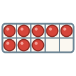
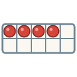
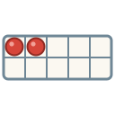
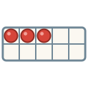

Unit 4
數字Numbers
Count from 零 to 萬, ask 幾多, and say first, second, third.
Learn
Counting
一 to 十 with hand signs, then 廿, 百, 千, 萬, and when two is 兩.

GameNumber Dash
Hear a number and tap it, fast. Is it 十四 or 四十?

GameWrite It
Write the numbers stroke by stroke with your finger: trace, then from memory, then 默書 from what you hear.

WritingWriting Sheet
Print a practice sheet: each character stroke by stroke in Hong Kong order, to trace and then write.
GameTone Detective
Hear a number and pick its tones.

SpeakingSay It Back
Record yourself and compare your tones with a native speaker's pitch curve.